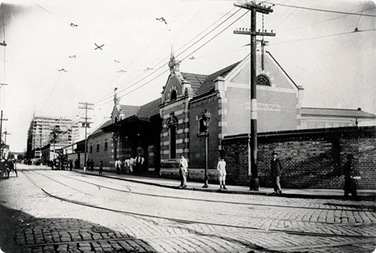
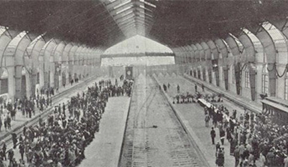
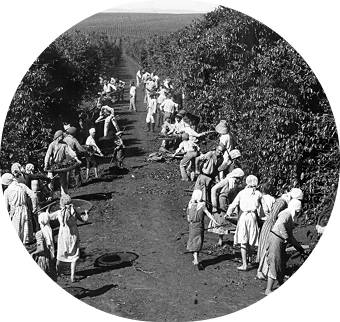
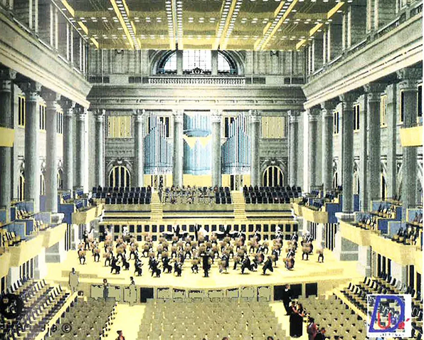
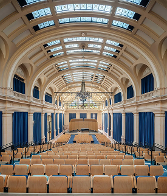
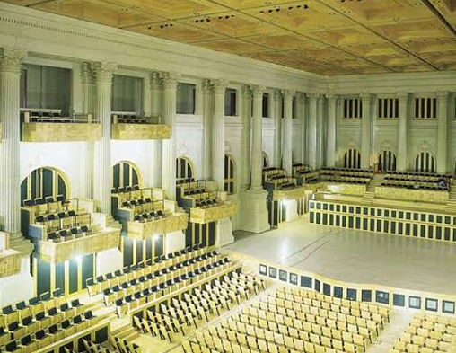
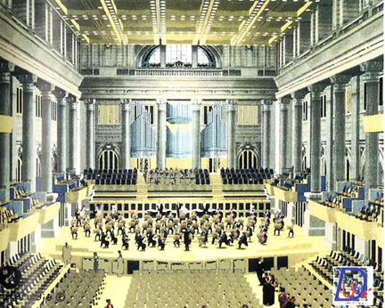

Conheça um pouco sobre
História da Sala São Paulo
A antiga Estação Júlio Prestes
A Estação Júlio Prestes foi construída no início do século XX para receber passageiros e mercadorias que chegavam a São Paulo pela Estrada de Ferro Sorocabana. A estação acompanhou o crescimento da cidade e se tornou um marco da arquitetura e da história ferroviária paulista.
Com o passar do tempo, o edifício deixou de cumprir apenas sua função original. A preservação do patrimônio e a criação de um equipamento cultural abriram caminho para uma nova ocupação do espaço.

Construção da Estação Júlio Prestes
O projeto da estação foi inspirado em referências europeias e expressava a importância econômica da ferrovia para São Paulo. A escala monumental, os materiais e a riqueza dos detalhes revelavam o desejo de construir um símbolo de modernidade.
A história do edifício também é a história das transformações urbanas e econômicas da cidade. Décadas depois, sua estrutura receberia uma nova vocação: abrigar música, encontros e experiências culturais.

Por que a estação foi construída?
A estação foi criada para conectar a capital ao interior paulista e escoar a produção agrícola que movimentava a economia do estado. Ela recebia passageiros, produtos e histórias de diferentes regiões.
Por isso, sua importância ultrapassa a função ferroviária: a estação ajudou a formar a paisagem urbana e a memória social de São Paulo.
A economia do café e o nascimento da estação
O café impulsionou a expansão das ferrovias e transformou a capital em um centro de circulação de pessoas, mercadorias e investimentos. A Estação Júlio Prestes surgiu nesse contexto de crescimento.
Os trilhos aproximaram territórios e ajudaram a consolidar novas relações entre o interior e a cidade.

A importância da Estação Júlio Prestes para São Paulo
Mesmo depois das mudanças no sistema ferroviário, a estação continuou sendo um patrimônio importante. Seu valor está na arquitetura, nas memórias associadas ao lugar e na capacidade de reunir passado e futuro.
A transformação em sala de concertos preservou esse legado e deu ao edifício uma presença nova na vida cultural da cidade.
O nascimento da Sala São Paulo
A ideia de criar uma sala de concertos no antigo Jardim de Inverno da estação uniu preservação histórica, arquitetura e acústica. O projeto transformou um espaço ferroviário em um dos principais equipamentos culturais do país.
A Sala São Paulo passou a receber orquestras, maestros e públicos de diferentes lugares, mantendo viva a relação entre patrimônio e cultura.

A escolha da Estação Júlio Prestes
A escolha não aconteceu por acaso. O amplo pé-direito, a estrutura robusta e as proporções do antigo Jardim de Inverno favoreciam a adaptação para um auditório sinfônico. Também havia um objetivo urbano: revitalizar o centro histórico e preservar um patrimônio tombado.
O projeto arquitetônico
Em 1997 teve início o projeto que daria origem à Sala São Paulo. A adaptação foi conduzida pelo arquiteto Nelson Dupré, sob coordenação de Luizette Davini, com projeto acústico da Artec Consultants.
O desafio era criar uma sala de concerto contemporânea sem apagar as marcas do edifício histórico.
O desafio de construir dentro de um patrimônio histórico
A obra exigiu cuidado com estruturas existentes, circulação, materiais e acústica. Cada solução precisava responder às necessidades da música sem comprometer a identidade da estação.
A restauração da Estação Júlio Prestes
A restauração recuperou elementos arquitetônicos e atualizou as instalações para que o espaço pudesse receber grandes apresentações. O resultado concilia memória, técnica e uso público.

A construção da Sala São Paulo
O projeto transformou o antigo Jardim de Inverno em uma sala com condições acústicas especiais. A obra mobilizou profissionais de diferentes áreas e respeitou a complexidade do patrimônio.

A inauguração
A Sala São Paulo foi inaugurada em 1999 e passou a ocupar um lugar central na programação musical brasileira. Desde então, o espaço reúne patrimônio, excelência artística e acesso à cultura.
